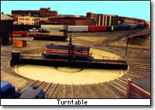

|
|
| about - | a description of the club |
|---|---|
| history - | a brief history of TMRC |
| committees - | the groups in TMRC that make things happen |
| TNP - | the Club's own Railroad |
| MITCo - | the Club's trolley line |
| System 3 - | The club's control system |
| hacking - | what real hacking is about |
| building 20 - | about the club's stay in this historic site |
| dictionary - | wonder what a psiton is? |
| laws - | the club's constitution, bylaws, and state hazing laws |
This web page, and the layout itself is constantly expanding, so be sure to check the progress page and the news box on the front page for the latest information about what's going on at the club.
For 50 years, the club had a layout located in Building 20 on the MIT campus. The layout modeled a portion of the fictional Tech Nickel Plate (TNP) railroad. A fair amount of info about the club and the original layout, oriented towards other model railroaders, appeared as the cover article in the July 1986 Railroad Model Craftsman, we have the original source text on line. The Last Open House in Bldg 20 occured December 7, 1996. The move itself began in July 1997. Building 20 was later demolished to make way for the infamous Stata Center. The memories of that layout are visible in the pictures preserved on this site. Click on any picture for a better view, or take our Cab's Eye Video Tour which was shot from a train rolling over the old layout. 
Since 1997 we've been located in in the MIT Museum Building, room N52-118 (you can get directions to the room here. We've made a great deal of progress on the new layout, the second in the club's history. The new layout has a double-track mainline on the first level, and will someday have an upper level that will include single-track sections. We have also built a new control system, the club's third, and the first to be computer based. Work continues at a pace that falls between furious and glacial, so take a look at our progress page from time to time to see what we're up to.
You can see a list of club members going back to 1946 here.
TMRC was featured as the first chapter of the book Hackers, by Steven Levy (New York: Anchor Press/Doubleday, 1984). The club is credited as one (possibly the primary) source of the Hacker Culture, as described in the book.
Several entries of the book The New Hacker's Dictionary, Third Edition, edited by Eric S. Raymond (MIT Press, 1996); ISBN 0-262-68092-3, are derived from TMRC's own dictionary.
On Nov 15th 1998, the Boston Herald published an article on model railroading, in which TMRC is mentioned. We also have a copy of the article here.
TMRC was also featured in the book "The Ultimate History of Video Games" by Steven L Kent. Steve Russel's development of the first video game is tied in with his time at TMRC.
|
Tech Model Railroad Club of
MIT Room N52-118 265 Massachusetts Avenue Cambridge, MA 02139
|
+1 617 253-3269 Email: tmrc-web@mit.edu |
{kind=link}